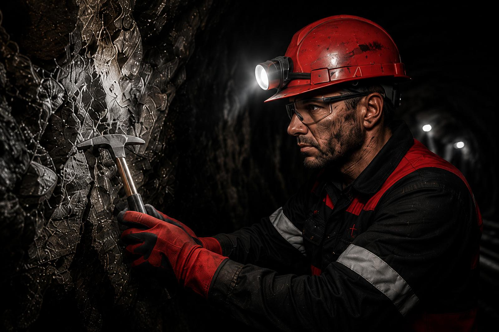

FIELDTerraQ Geo
Geoscience done properly at the source.
Geology
- Drillhole logging and QA/QC
- Geological interpretation and mapping
- Resource data preparation
Hydrogeology
- Groundwater monitoring
- Pump testing and aquifer modelling
- Dewatering assessments
Geotechnical
- RQD and rock mass classification
- Structural and fracture analysis
- Slope stability
GIS & spatial
- GIS database creation
- Environmental mapping
- Spatial data integration